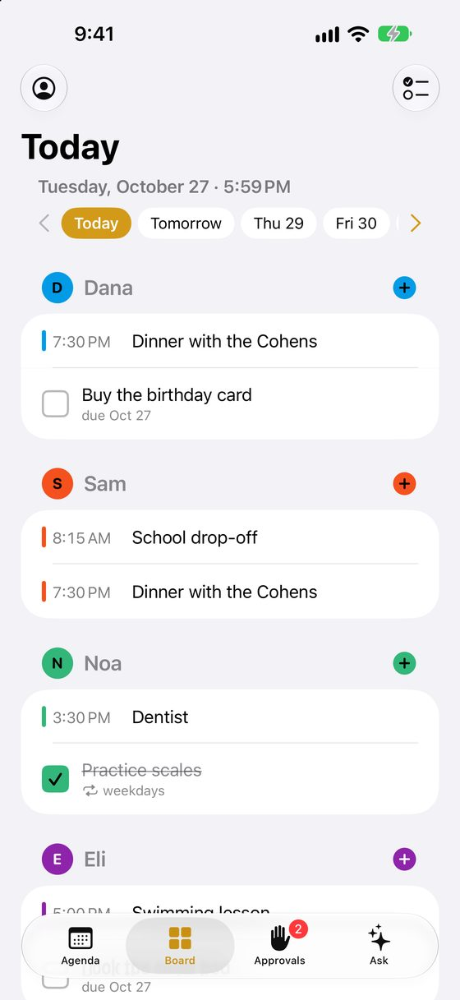
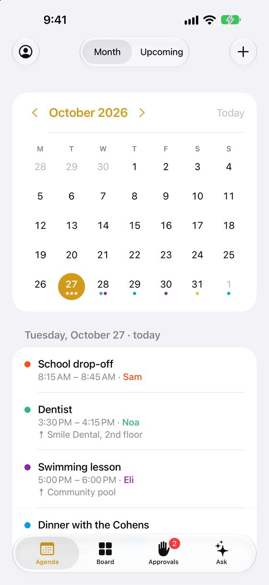
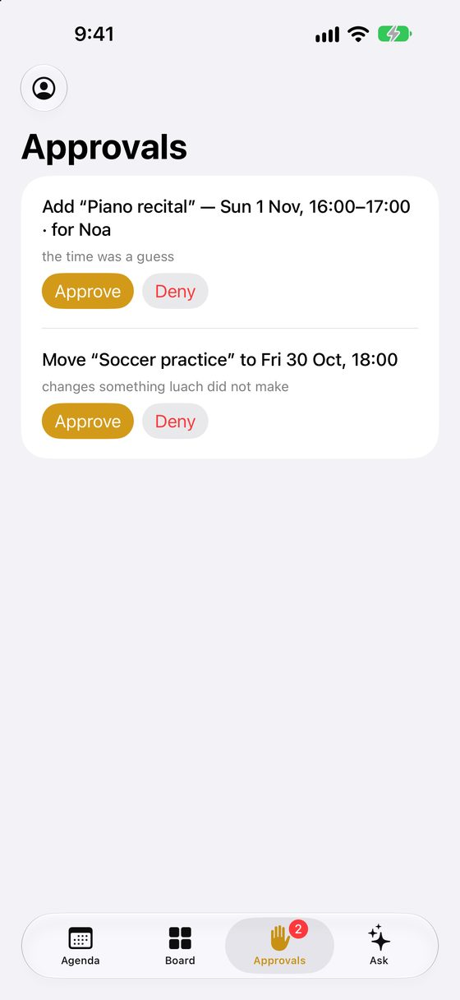

Say “dentist next Tuesday at three” and it’s on everyone’s calendar. Ask “is Saturday free?” and it answers. luach keeps your family’s days in one place, and asks before it changes anything.
Free and open source · English, Español, עברית · No ads, no tracking, no account with us
The way families already talk about their week, without opening a calendar app.
“Swimming for Lily every Thursday at 5:30.” Type it, hold the mic, or forward the school’s email.
It works out the day, the person and the time, checks for clashes, and shows you the steps it took.
Clear requests go straight on the calendar. A guessed time, a likely duplicate or a change to someone else’s plans waits for a yes.
A made-up family on the iPhone app: Dana, Sam, Noa and Eli.



One calendar for the whole household, on every screen you have.
Type or speak in English, Spanish or Hebrew. Follow-ups work: “no, Thursday”, “move it to five”.
Anything unsure waits as a card with Approve and Deny, for whoever should decide.
Forward an invitation or a booking, or connect your Gmail, and luach proposes what belongs on the calendar.
A touch screen on the wall with everyone’s day, chores to tick, and tomorrow at a glance.
To-dos and daily chores for each person, ticked off on the board or the phone.
A nudge before each event, tomorrow’s list in the evening, and the week ahead.
School, practice, lessons: change one occurrence or all of them.
Share a page where others pick a time when the family is free.
“When does the pharmacy close on Sunday?” “Will it rain tomorrow?” With the source.
A calendar is a family’s shared memory. luach treats it that way.
luach isn’t a service you sign up for. Each family runs its own, on a computer it controls. If you can follow a recipe, you can do this in an afternoon.
git clone https://github.com/luach-app/luach.git cd luach && cp .env.example .env
.env: a cloud provider such as OpenRouter, or Ollama on your own machine.docker compose up -d docker compose logs luach | grep -A3 "setup code"
The full guide walks through every step and every optional extra, with the exact settings, backups, upgrades and troubleshooting. The source is on GitHub.
The whole household in your pocket: Agenda, Board, Approvals and Ask, in English, Spanish and Hebrew.
It works with any family’s luach: enter your luach’s address when you sign in. Reminders arrive as notifications, and you can approve what’s waiting with a tap.
On the App Store soon.
No, on purpose. luach holds a family’s plans, conversations and, if you connect it, email. It belongs on a computer the family controls. Nobody, including us, runs one for you.
Your calendar, conversations and memory stay on your server. What you ask goes to the AI model you configured: if it runs at home, nothing leaves the house; if it’s a cloud model, that provider sees the request. The app shows which, and asks first.
No. luach keeps its own calendar. If your family already lives in Google Calendar, it can use that instead, and Gmail import is optional.
luach is free. You pay for your own computer or cloud server, a domain, and, if you use one, a cloud AI model, typically a few dollars a month for a family.
The web app works on any phone and can be added to the home screen. A native Android app isn’t planned yet.